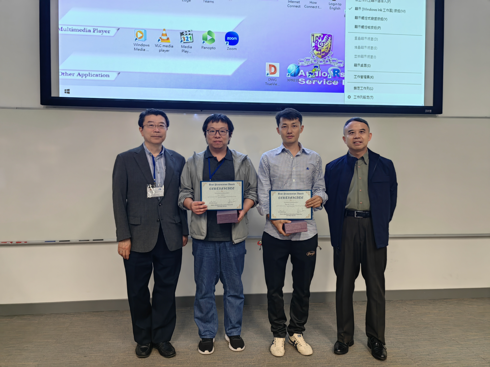

The Sixth Young Scholar Symposium
Date and Venue
March 25-26, 2023
Department of Mathematics, The Chinese University of Hong Kong
This series of symposia aims to promote young scholars working on inverse problems in the East Asia region. The symposia also provide a platform for active young researchers to exchange ideas and research results with their peers as well as leading experts from the East Asia region and to explore opportunities for research collaborations. In this symposium, we will select the winner of “Best Presentation Award” from the speakers.
Scientific Committee
|
Jenn-Nan Wang |
National Taiwan University |
|
Gunther Uhlmann |
University of Washington / Hong Kong University of Science and Technology |
|
Masahiro Yamamoto |
The University of Tokyo |
|
Bo Zhang |
Chinese Academy of Sciences |
|
Jun Zou |
The Chinese University of Hong Kong |
Organizing Committee
|
Bangti Jin |
The Chinese University of Hong Kong |
|
Hongyu Liu |
City University of Hong Kong |
|
Hai Zhang |
Hong Kong University of Science and Technology |
Best presentation award
At the symposium, the "Best Presentation Award” will be awarded.
Awardees:
Prof. Wenlong Zhang (Southern University of Science and Technology) ZHANG Wenlong - Faculty - SUSTech
Prof. Zhi Zhou (Hong Kong Polytechnic University) Zhi Zhou's Homepage (google.com)

Programme
Talk slides for the following speakers:
- Kazunori Ando (Ehime University)
- Zetao Fei (Hong Kong University of Science and Technology)
- Kuang Huang (Columbia University)
- Chun-Hsiang Tsou (National Central University)
- Andrew Lam (Hong Kong Baptist University)
- Yunwen Lei (Hong Kong Baptist University)
- Johannes Leuschner (University of Bremen)
- Yi-Hsuan Lin (National Yang Ming Chiao Tung University)
- Catharine Wing Kwan Lo (City University of Hong Kong)
- Zili Xu (Hong Kong University of Science and Technology)
- Masahiro Yamamoto (The University of Tokyo)
- Sanghyeon Yu (Korea University)
- Wenlong Zhang (SUSTech)
- Ye Zhang (BIJ-Moscow, Shenzhen)
- Zhi Zhou (Hong Kong Polytechnic University)
Participants
- Kazunori Ando (Ehime University)
- Riccardo Barbano (University College London)
- Fengmiao Bian (HKUST)
- Siyu Cen (Poly U)
- Wai Ming Chau (HKUST)
- Chun-Hsiang Tsou (National Central University)
- Yongcheng Dai (Poly U)
- Minghui Ding (City U)
- Chaohua Duan (City U)
- Zetao Fei (HKUST)
- Fuqun Han (CUHK)
- Youzi He (CUHK)
- Yueguang Hu (City U)
- Kuang Huang (Columbia University)
- Yan Jiang (Jilin University)
- Bangti Jin (CUHK)
- Andrew Kei Fong Lam (HKBU)
- Johannes Leuschner (University of Bremen)
- Young Kyu Lee (HKUST)
- Yunwen Lei (HKBU)
- Hongjie Li (CUHK)
- Xingyu Leung (HKUST)
- Jianliang Li (Hunan Normal University)
- Xiyao Li (University College London)
- Yuhan Li (City U)
- Yi-Hsuan Lin (National Yang Ming Chiao Tung University)
- Hongyu Liu (City U)
- Ziyun Liu (HKUST)
- Xiaodong Liu (Chinese Academy of Science)
- Catherine Lo (City U)
- Xinyu Liu (HKUST)
- Qingle Meng (City U)
- Puyuan Mi (Technical University of Denmark)
- Jiayu Qiu (HKUST)
- Qimeng Quan (Wuhan University)
- Ramesh Chandra Sau (CUHK)
- Kwancheol Shin (Poly U)
- Ruixiang Tang (Northeast Normal University)
- Longyue Tao (Northeast Normal University)
- Tunde Tiamiyu (CUHK)
- Li Wang (City U)
- Xiaochao Wang (Harbin Institute of Technology)
- Tong Wu (CUHK)
- Yuxin Xia (Harbin Institute of Technology)
- Yin Xian (HKUST)
- Zhuozhi Xian (HKUST)
- Zili Xu (HKUST)
- Yuanhao Xuan (CUHK)
- Masahiro Yamamoto (The University of Tokyo)
- Luowei Yin (CUHK)
- Sanghyeon Yu (Korea University)
- Zhaoming Yuan (Poly U)
- Hai Zhang (HKUST)
- Jinyang Zhang (HKUST)
- Shen Zhang (City U)
- Wenlong Zhang (SUSTech)
- Ye Zhang (BIJ-Moscow, Shenzhen)
- Zhengqi Zhang (Poly U)
- Zhi Zhou (Poly U)
- Jun Zou (CUHK)